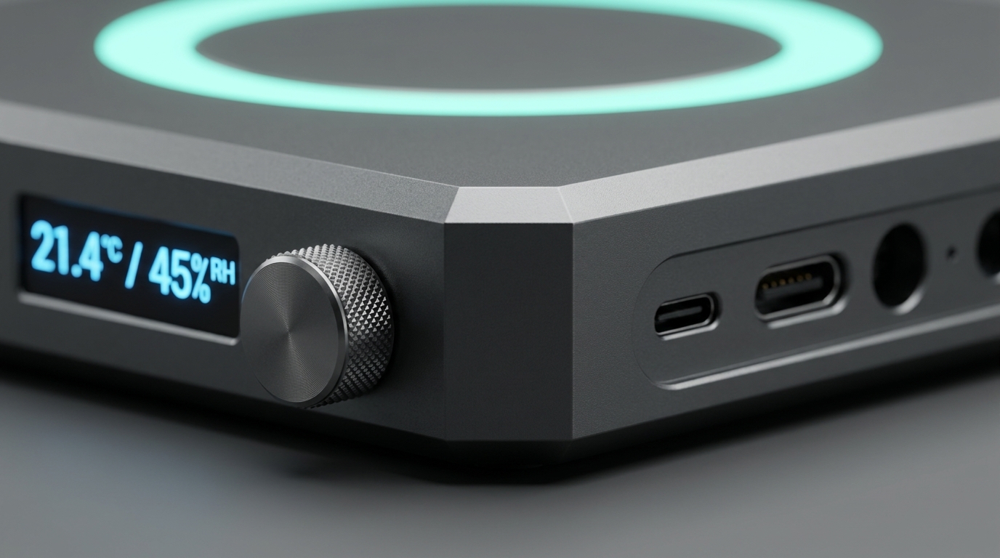
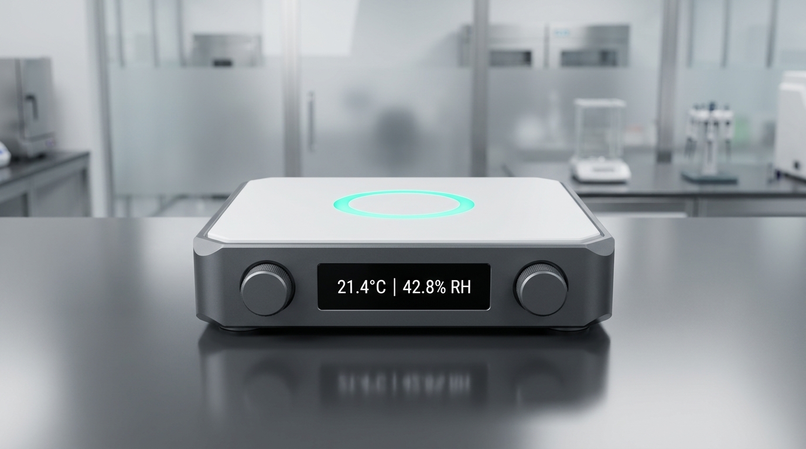
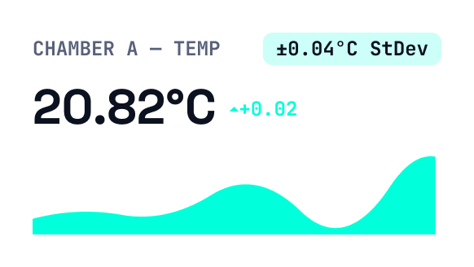
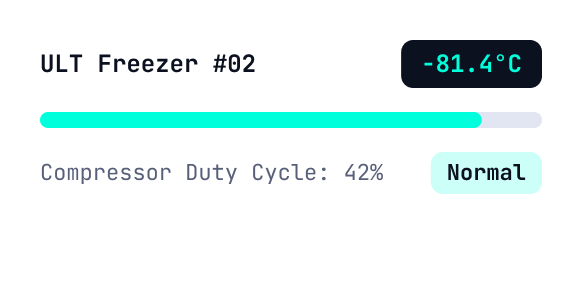
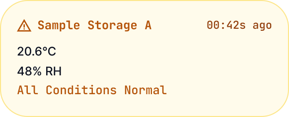
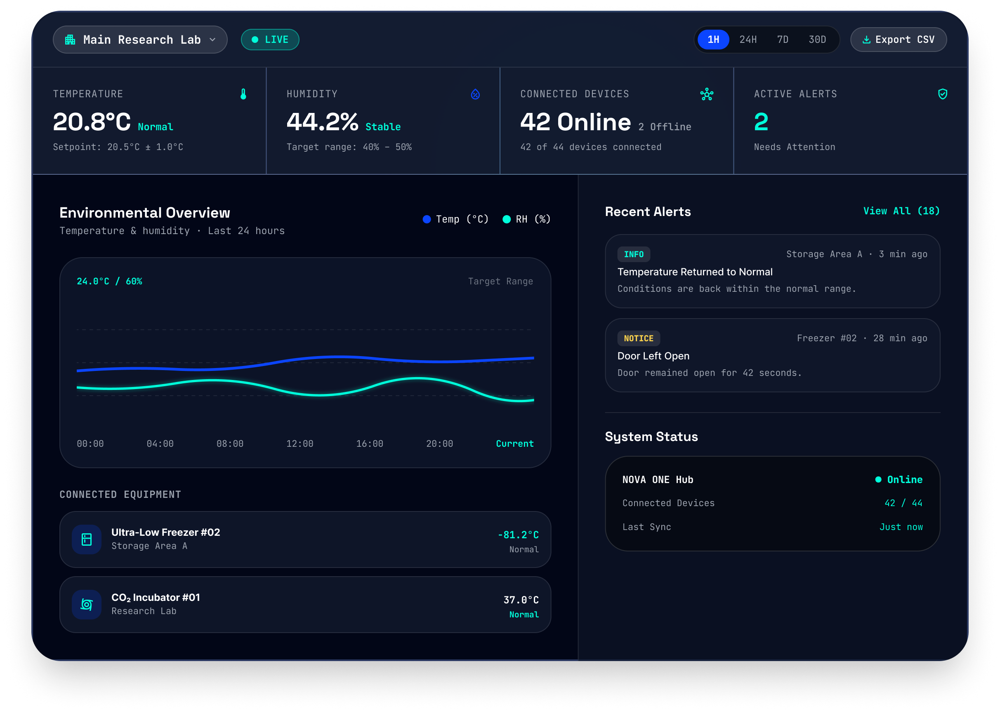

Environmental Monitoring
Continuously track temperature, humidity, air quality, and other critical lab conditions.
Monitor environmental conditions, equipment, and critical lab systems in real time—all from one connected platform.
Request a Demo See How It Works ↓
NOVA ONE brings environmental monitoring, equipment monitoring, and real-time alerts together in one connected lab monitoring system.
Continuously track temperature, humidity, air quality, and other critical lab conditions.
Get notified when conditions change or critical thresholds are reached, so your team can respond quickly.
Keep track of connected equipment and monitor operating conditions through one central system.
Compact lab monitoring hardware designed for continuous, reliable operation.

Keep every critical lab condition, equipment status, and space visible from one connected monitoring system.
Monitor temperature, humidity, air quality, and other environmental conditions across your lab.

Track connected equipment and spot unusual changes before they disrupt your workflow.

Monitor storage areas, research spaces, and other sensitive zones from one central system.

View live lab conditions, connected equipment, system status, and alerts from one centralized monitoring dashboard.

NOVA ONE turns real-time lab monitoring data into clear insights and timely alerts through one connected workflow.
NOVA ONE continuously captures environmental conditions and data from connected equipment.
Monitoring data is securely synced to the NOVA Cloud Platform, keeping your lab information up to date.
See live conditions, equipment status, and recent alerts together in one centralized dashboard.
Receive timely alerts when conditions change, so your team can quickly review and respond.
See how NOVA ONE helps your team monitor critical lab conditions, track connected equipment, and respond to real-time alerts.